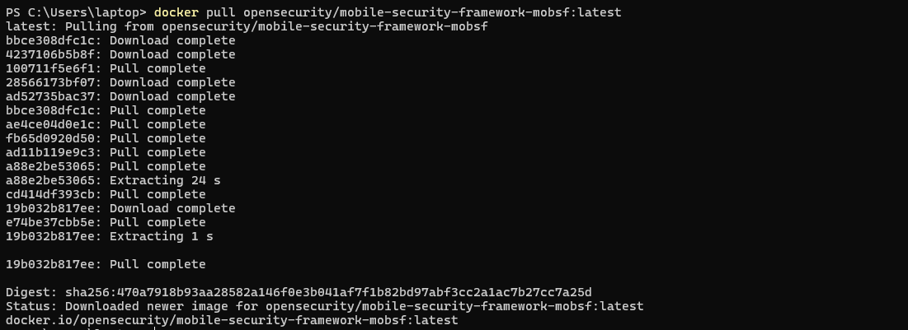
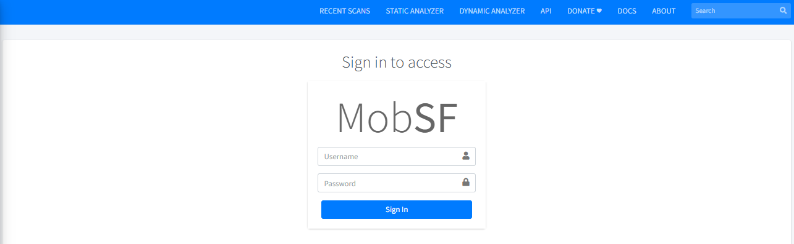
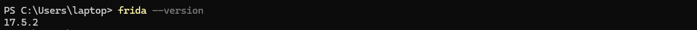
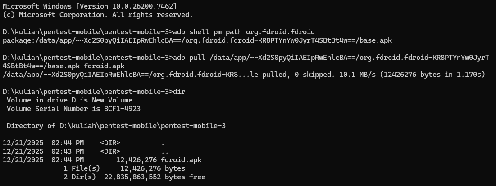
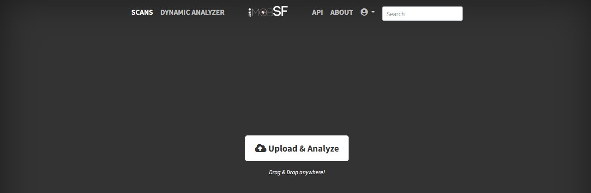
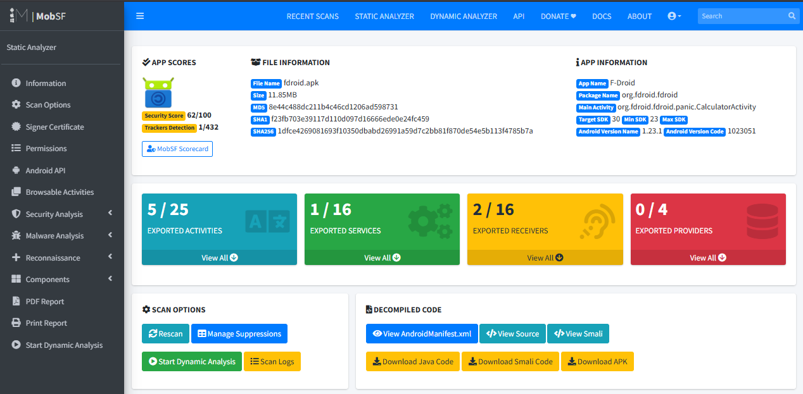
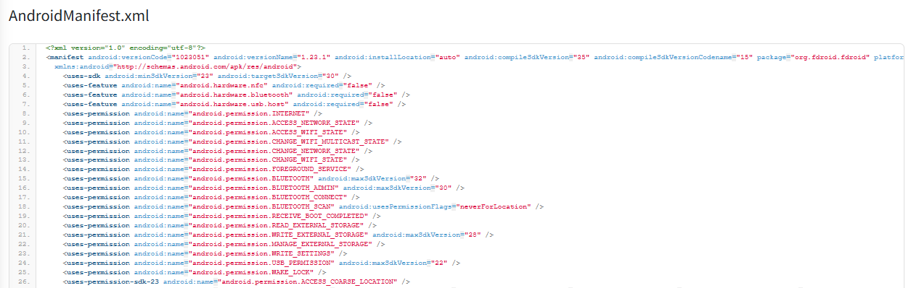
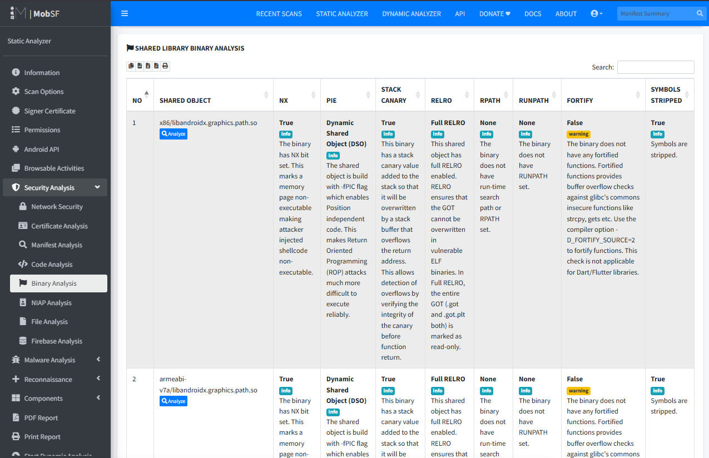
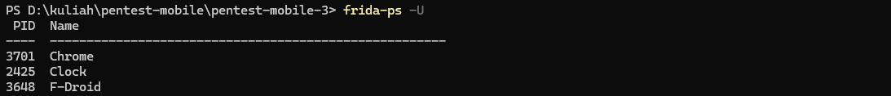
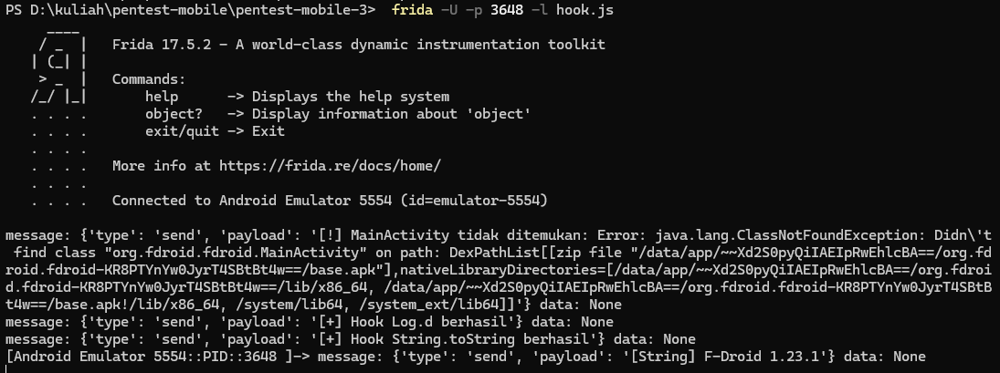

1. Pendahuluan
Pengujian keamanan aplikasi mobile memerlukan kombinasi analisis statis dan dinamis
untuk memahami risiko secara menyeluruh. Pada praktik ini digunakan tiga tools utama,
yaitu MobSF untuk analisis statis, ADB sebagai penghubung dan orkestrasi perangkat,
serta Frida untuk instrumentasi dinamis pada runtime aplikasi Android.
Seluruh proses dilakukan pada lingkungan Windows 11 tanpa WSL dan tanpa virtual machine.
2. Lingkungan dan Tools
- Sistem Operasi: Windows 11
- Android Device / Emulator (USB Debugging aktif)
- MobSF (Mobile Security Framework)
- Android Debug Bridge (ADB)
- Frida & Frida-Tools
3. Persiapan Awal
Tahap persiapan awal dilakukan untuk menjalankan MobSF (Mobile Security Framework) menggunakan Docker pada sistem operasi Windows 11. MobSF akan digunakan sebagai alat utama untuk melakukan analisis statis terhadap file APK Android.
3.1.1 Menarik Image Resmi MobSF dari Docker Hub
Pastikan Docker sudah terpasang dan berjalan dengan normal.
Kemudian jalankan perintah berikut pada Command Prompt atau PowerShell:

Perintah ini digunakan untuk mengunduh image resmi MobSF versi terbaru dari Docker Hub ke sistem lokal.
3.1.2 Menjalankan Container MobSF
Setelah image berhasil diunduh, jalankan container MobSF dengan melakukan mapping port 8000 container ke port 8000 host:
3.1.3 Mengakses Dashboard MobSF
Setelah container berjalan, buka browser dan akses alamat berikut: http://localhost:8000/
Jika berhasil, halaman dashboard MobSF akan tampil dan siap digunakan untuk analisis APK.
3.1.4 Login ke MobSF

Gunakan kredensial default MobSF untuk masuk ke dashboard:
- Username: mobsf
- Password: mobsf
Setelah login, MobSF siap digunakan untuk melakukan analisis statis aplikasi Android.
3.2.1 Instalasi Frida dan Frida-Tools
Install Frida dan Frida-tools menggunakan pip:
Tunggu hingga proses instalasi selesai tanpa error. Lalu periksa versi Frida untuk memastikan instalasi berhasil:

3.2.2 Tentukan ABI Emulator (WAJIB)
Pastikan frida-server berjalan di device:
Catat hasilnya, biasanya: x86_64
3.2.3 Download frida-server yang SESUAI
Pastikan: Versi sama dengan Frida CLI → 17.5.2 dan ABI sama dengan device
Contoh nama file:
frida-server-17.5.2-android-x86_64.xz
Ekstrak sampai dapat file:
Rename menjadi:
3.2.4 Push dan Run frida-server ke Device
Dari folder tempat frida-server berada:
Diamkan Terminal ini. Jika berhasil: Tidak ada error dan Cursor diam (frida-server running)
3.3.1 Mengambil File APK dari Emulator
Menentukan lokasi file APK F-Droid pada emulator:
Mengambil file APK F-Droid dari emulator ke sistem host Windows:
APK diekstrak langsung dari emulator untuk dilakukan analisis statis di sisi host Windows.
Pastikan file tersedia

4. Analisis Statis Dasar (MobSF)
4.1 Mengunggah APK ke MobSF
Setelah login, pada halaman utama MobSF, klik tombol Upload & Analyze.
Pilih file APK yang telah disiapkan sebelumnya (target.apk).

Tunggu proses upload dan analisis statis berjalan hingga selesai. Proses ini biasanya memakan waktu beberapa detik hingga beberapa menit, tergantung ukuran aplikasi.
4.2 Hasil Analisis Statis (Summary MobSF)
Setelah proses analisis selesai, MobSF akan menampilkan halaman Summary Report yang berisi beberapa bagian utama sebagai berikut:

1. Manifest Summary
Menampilkan konfigurasi utama dari AndroidManifest.xml, antara lain:
- Daftar permission yang digunakan aplikasi
- Komponen aplikasi yang diekspos (activity, service, receiver, provider)
- Status konfigurasi seperti debuggable dan allowBackup

2. Binary Analysis
Menampilkan hasil analisis terhadap kode aplikasi, meliputi:
- String yang tertanam di dalam APK
- Pemanggilan API tertentu
- Indikasi penggunaan fungsi atau library berisiko

4.3 Mengunduh Laporan Analisis
- Pada halaman hasil analisis MobSF, pilih PDF Report.
- Simpan file laporan sebagai dokumentasi hasil analisis statis aplikasi.
MobSF Static Analysis Report.pdf
5. Analisis Statis Dasar (Frida)
5.1 Buka PowerShell BARU → Verifikasi
Jika muncul process list → frida-server AKTIF

5.2 Membuat Script Hooking Frida
Buat file JavaScript baru, misalnya: hook.js
Isi file hook.js dengan script hooking sederhana berikut:
Script ini digunakan untuk memastikan bahwa Frida berhasil melakukan hooking ke runtime aplikasi.
5.3 Menjalankan Hooking pada Aplikasi Target
Jalankan aplikasi target di device. Dari host Windows, jalankan perintah berikut:
Gunakan PID F-Droid (tadi: 3648):

6. Hasil dan Temuan
Temuan dari MobSF (Analisis Statis)
Berdasarkan hasil analisis statis aplikasi menggunakan MobSF, diperoleh beberapa temuan penting terkait konfigurasi keamanan, komponen aplikasi, serta potensi risiko sebagai berikut:
1. Konfigurasi Aplikasi
android:debuggable
- Tidak ditemukan
- Artinya aplikasi tidak dalam mode debug, sehingga lebih aman dari eksploitasi debugging langsung.
android:allowBackup
- Aktif (true)
- Mengizinkan data aplikasi di-backup melalui mekanisme Android.
Risiko:
Data aplikasi berpotensi diekstrak melalui backup jika perangkat atau akun pengguna terkompromi.
Mitigasi:
Set android:allowBackup="false" untuk aplikasi produksi yang menangani data sensitif.
2. Komponen yang Diekspos (Exported Components)
Ditemukan beberapa activity dan receiver dengan android:exported="true", antara lain:
- org.fdroid.fdroid.panic.PanicPreferencesActivity
- org.fdroid.fdroid.panic.PanicResponderActivity
- org.fdroid.fdroid.views.repos.AddRepoActivity
- org.fdroid.fdroid.views.main.MainActivity
- org.fdroid.fdroid.receiver.RepoUpdateReceiver
Risiko:
Komponen yang diekspos dapat dipanggil oleh aplikasi lain jika tidak dilindungi validasi atau permission tambahan, berpotensi menyebabkan component abuse.
Mitigasi:
Batasi komponen dengan android:exported="false" jika tidak diperlukan
Tambahkan validasi intent dan permission khusus pada komponen yang harus diekspos
3. Permissions Aplikasi
Tidak ditemukan permission berisiko tinggi seperti:
Permission yang digunakan sebagian besar relevan dengan fungsi aplikasi (network, storage, package management).
Risiko:
Beberapa permission seperti MANAGE_EXTERNAL_STORAGE dan QUERY_ALL_PACKAGES bersifat luas dan perlu kontrol ketat.
Mitigasi:
Terapkan prinsip least privilege dan evaluasi kembali permission dengan cakupan luas.
4. Hardcoded Strings / API Key Sensitif
Tidak ditemukan API key atau credential sensitif secara eksplisit pada manifest.
Informasi seperti versi aplikasi (1.23.1) tetap dapat terungkap melalui analisis runtime (dibuktikan pada tahap Frida).
Risiko:
Informasi internal dapat digunakan untuk fingerprinting aplikasi.
Mitigasi:
Minimalkan informasi sensitif di log dan string runtime
Gunakan obfuscation (ProGuard / R8)
Ringkasan Temuan dari MobSF
Hasil analisis statis menggunakan MobSF menunjukkan bahwa aplikasi tidak berjalan dalam mode debug, namun masih mengaktifkan fitur allowBackup yang berpotensi memungkinkan ekstraksi data aplikasi. Ditemukan beberapa activity dan receiver yang diekspos ke luar aplikasi, sehingga berisiko terhadap penyalahgunaan komponen jika tidak dilengkapi validasi tambahan. Tidak ditemukan permission berisiko tinggi yang tidak relevan maupun API key sensitif secara eksplisit, meskipun informasi internal aplikasi masih dapat terungkap melalui analisis dinamis.
Temuan dari Frida (Analisis Dinamis)
1. Hooking Runtime Berhasil
Frida berhasil attach ke proses aplikasi dengan PID 3648.
Script hook.js dieksekusi tanpa crash.
2. Class MainActivity Tidak Ditemukan
Frida gagal menemukan class org.fdroid.fdroid.MainActivity.
Makna Temuan:
- Aplikasi tidak menggunakan class tersebut secara langsung
- Struktur aplikasi kemungkinan memakai activity lain, fragment, atau arsitektur modular
- Bukan kegagalan keamanan, namun informasi struktur internal aplikasi
Risiko:
Penyerang dapat memetakan struktur aplikasi melalui trial-and-error hooking
Mitigasi:
Terapkan obfuscation (R8 / ProGuard)
Minimalkan informasi class name yang mudah ditebak
3. Intersepsi Log Debug (Log.d)
Hook pada android.util.Log.d() berhasil.
Makna Temuan:
- Seluruh log debug aplikasi dapat diintersep saat runtime
- Jika log berisi data sensitif, berpotensi bocor
Mitigasi:
Hapus atau minimalkan log debug pada build produksi
Gunakan conditional logging (disable pada release build)
4. Kebocoran Informasi melalui String.toString()
Frida berhasil menangkap string internal aplikasi:
Makna Temuan (KRUSIAL):
- Informasi internal aplikasi dapat diambil saat runtime
- Data ini tidak terlihat pada analisis statis
- Menunjukkan potensi information disclosure
Risiko:
Fingerprinting aplikasi (versi, fitur, kondisi internal)
Membantu eksploitasi lanjutan yang spesifik versi
Mitigasi:
Hindari menyimpan informasi sensitif dalam string runtime
Gunakan obfuscation string
Validasi lingkungan runtime (anti-instrumentation / anti-Frida)
Ringkasan Temuan dari Frida
Hasil analisis dinamis menggunakan Frida menunjukkan bahwa aplikasi dapat diinstrumentasi dan diamati pada saat runtime. Meskipun class MainActivity tidak ditemukan, hooking terhadap fungsi umum seperti Log.d dan String.toString berhasil dilakukan dan menghasilkan informasi internal aplikasi, seperti versi aplikasi. Hal ini membuktikan adanya potensi kebocoran informasi runtime yang tidak terdeteksi pada analisis statis.
7. Bukti Screenshot
Bukti pengujian dikumpulkan dalam bentuk screenshot, antara lain:
- Tampilan hasil analisis statis MobSF.
- Daftar proses aplikasi dari frida-ps -U.

- Output hasil hooking Frida pada aplikasi target.
Seluruh bukti disimpan sebagai dokumentasi pendukung laporan.
8. Kesimpulan
Berdasarkan rangkaian pengujian yang dilakukan, integrasi analisis statis dan dinamis pada aplikasi Android berhasil dilaksanakan menggunakan MobSF, ADB, dan Frida. Analisis statis dengan MobSF mengungkap konfigurasi keamanan aplikasi, seperti aktifnya fitur allowBackup, adanya beberapa komponen yang diekspos, serta penggunaan permission dengan cakupan luas namun masih relevan dengan fungsi aplikasi. Selanjutnya, melalui analisis dinamis menggunakan Frida, berhasil dilakukan instrumentasi runtime dengan metode attach berdasarkan PID, yang membuktikan bahwa aktivitas internal aplikasi dapat diintersep saat berjalan, termasuk log debug dan string internal seperti informasi versi aplikasi. Meskipun tidak ditemukan kerentanan kritis secara langsung, hasil pengujian menunjukkan potensi kebocoran informasi runtime dan risiko penyalahgunaan komponen jika tidak dikonfigurasi dengan baik. Oleh karena itu, penerapan mitigasi seperti pembatasan komponen yang diekspos, penonaktifan log debug pada build produksi, serta penggunaan obfuscation menjadi langkah penting untuk meningkatkan keamanan aplikasi Android secara keseluruhan.